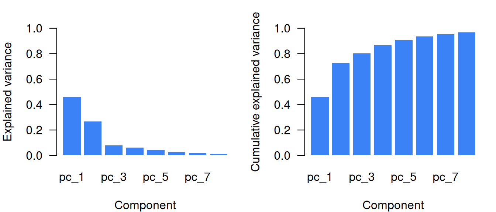
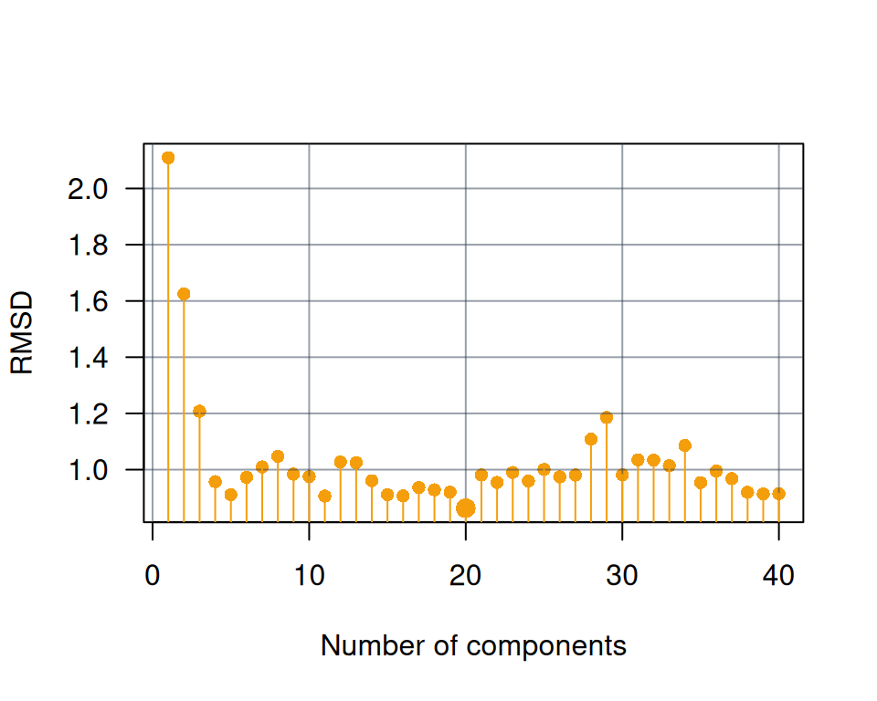
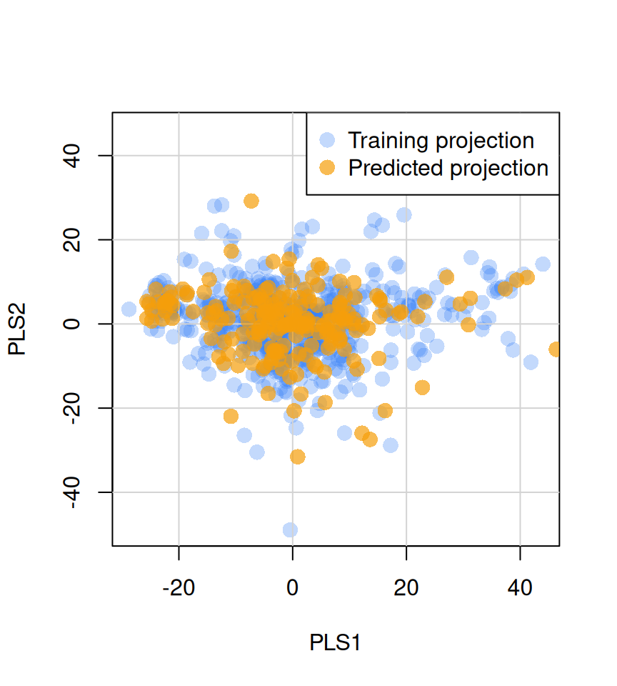

library(resemble)
library(prospectr)
# obtain a numeric vector of the wavelengths at which spectra is recorded
wavs <- as.numeric(colnames(NIRsoil$spc))
# pre-process the spectra:
# - use detrend
# - use first order derivative
diff_order <- 1
poly_order <- 1
window <- 7
# Preprocess spectra
NIRsoil$spc_pr <- savitzkyGolay(
detrend(NIRsoil$spc, wav = wavs),
m = diff_order, p = poly_order, w = window
)
train_x <- NIRsoil$spc_pr[NIRsoil$train == 1, ]
train_y <- NIRsoil$Ciso[NIRsoil$train == 1]
test_x <- NIRsoil$spc_pr[NIRsoil$train == 0, ]
test_y <- NIRsoil$Ciso[NIRsoil$train == 0]Probability mass concentrates near regions that have a much smaller dimensionality than the original space where the data lives – (Bengio et al., 2013)

1 Introduction
Exploratory analysis of spectral data is often affected by the curse of dimensionality. In near-infrared (NIR) spectroscopy, for example, a single spectrum may contain measurements at hundreds to thousands of highly correlated wavelengths. Tasks such as pattern detection, similarity assessment, and outlier detection therefore often require reducing the dimensionality of the spectra while retaining the most relevant information.
Principal component analysis (PCA) and partial least squares (PLS) are among the most widely used methods for dimensionality reduction in spectroscopic analysis. Both methods are based on the idea that the meaningful structure of spectral data lies in a lower-dimensional subspace. They seek to construct a projection that transforms the original variables into a smaller set of latent variables that provides a more compact representation of the data while preserving its dominant structure.
The main difference between PCA and PLS lies in the criterion used to define the latent variables. In PCA, the objective is to obtain orthogonal components that explain as much variation in the predictor matrix as possible. In PLS, the objective is to obtain latent variables that maximize the covariance between the predictor matrix and one or more external variables, such as response variables or side information.
In PCA and PLS, the input spectra (, of dimensions ) are decomposed into a score matrix () and a loading matrix (), such that
where the dimensions of and are and , respectively, is the number of retained components, and is the residual matrix (reconstruction error). In PCA, the columns of are orthonormal (), which allows new observations to be projected directly onto the latent space. For centered data, the maximum number of components that can be retained is .
Once a projection model has been estimated, new observations can be projected onto the same latent space. If denotes a matrix of new spectra preprocessed in the same way as the original data, their scores can be obtained as
where contains the loading vectors defining the projection space.
The resemble package provides the function ortho_projection() to compute orthogonal projections of spectral data using PCA- and PLS-based methods. These projections can be used for exploratory analysis, visualization, dissimilarity analysis, neighbor search, and predictive modeling.
2 Methods available in the resemble package
In the resemble package, orthogonal projections based on PCA and PLS are computed with the ortho_projection() function.
The function provides the following algorithms for PCA:
"pca": standard PCA computed by singular value decomposition (SVD)."pca_nipals": PCA computed with the nonlinear iterative partial least squares (NIPALS) algorithm (Wold, 1975).
For PLS, the available algorithms are:
"pls": standard partial least squares decomposition computed with the NIPALS algorithm. The projection is guided by external variables provided inYr, so that the latent variables maximize the covariance between the spectral predictors and the side information."mpls": modified partial least squares, also computed with the NIPALS algorithm. Unlike standard PLS, which derives weights from covariances, this method uses correlations betweenXrandYr, reducing the influence of predictor variance on the projection (Shenk and Westerhaus, 1991)."simpls": partial least squares computed with the SIMPLS algorithm (De Jong, 1993), which is often computationally more efficient than NIPALS for high-dimensional data.
3 Selecting the number of components
One of the critical decisions in dimensionality reduction is determining how many latent variables to extract. Retaining too few components risks discarding meaningful information, while retaining too many may introduce noise or lead to overfitting in subsequent modeling steps.
The resemble package provides a set of constructor functions for specifying component selection criteria. These functions return specification objects that are passed to the ncomp argument of ortho_projection() and related functions:
| Function | Criterion |
|---|---|
ncomp_by_var() |
Individual variance threshold |
ncomp_by_cumvar() |
Cumulative variance threshold |
ncomp_by_opc() |
Optimal selection via nearest-neighbor evaluation |
ncomp_fixed() |
Fixed number of components |
Alternatively, passing a positive integer directly to ncomp is equivalent to using ncomp_fixed().
3.1 Variance-based selection
The simplest approach is to retain components based on the amount of variance they explain.
3.1.1 Individual variance threshold (ncomp_by_var())
Retains all components that individually explain at least a specified proportion of the total variance:
In the following examples, the default method (PCA with SVD) is used to compute the projection, but the same component selection criteria can be applied to any of the available methods.
# Retain components that individually explain at least 1% of variance
proj_var <- ortho_projection(train_x, ncomp = ncomp_by_var(0.01))
proj_var
Method: pca
Number of components retained: 8
Number of observations and number of original variables: 618 694
Original variance in Xr: 43.499
Explained variances, ratio of explained variance, cumulative explained variance:
Explained variance in Xr:
pc_1 pc_2 pc_3 pc_4 pc_5 pc_6 pc_7 pc_8
var 19.919 11.602 3.3862 2.7444 1.7983 1.2423 0.825 0.5364
explained_var 0.458 0.267 0.0778 0.0631 0.0413 0.0286 0.019 0.0123
cumulative_explained_var 0.458 0.725 0.8025 0.8656 0.9069 0.9355 0.954 0.9668The above configuration of ncomp_by_var(0.01) retained a total of 8 components which are the ones that individually explain at least 1% of the total variance in the data.
3.1.2 Cumulative variance threshold (ncomp_by_cumvar())
Retains the minimum number of components needed to reach a specified cumulative proportion of explained variance:
# Retain enough components to explain at least 99% of variance
proj_cumvar <- ortho_projection(train_x, ncomp = ncomp_by_cumvar(0.99))
proj_cumvar
Method: pca
Number of components retained: 14
Number of observations and number of original variables: 618 694
Original variance in Xr: 43.499
Explained variances, ratio of explained variance, cumulative explained variance:
Explained variance in Xr:
pc_1 pc_2 pc_3 pc_4 pc_5 pc_6 pc_7 pc_8
var 19.919 11.602 3.3862 2.7444 1.7983 1.2423 0.825 0.5364
explained_var 0.458 0.267 0.0778 0.0631 0.0413 0.0286 0.019 0.0123
cumulative_explained_var 0.458 0.725 0.8025 0.8656 0.9069 0.9355 0.954 0.9668
pc_9 pc_10 pc_11 pc_12 pc_13 pc_14
var 0.27659 0.21380 0.18978 0.15322 0.09713 0.08964
explained_var 0.00636 0.00492 0.00436 0.00352 0.00223 0.00206
cumulative_explained_var 0.97314 0.97806 0.98242 0.98594 0.98818 0.99024The above configuration of ncomp_by_cumvar(0.99) retained a total of 14 components which are the minimum number of components needed to explain at least 99% of the total variance in the data.
3.2 Optimal component selection (ncomp_by_opc())
Variance-based criteria consider only the structure of the predictor matrix. However, in supervised contexts, the goal is often to retain components that are relevant for capturing information realted to a response variable. The optimal component selection method (“opc”) addresses this by incorporating side information.
The method is based on the assumption that if two observations are similar in the spectral space, they should also be similar in terms of their side information (Ramirez-Lopez et al., 2013). For a sequence of retained components , the function computes a dissimilarity matrix at each step and identifies the nearest spectral neighbor for each observation. The side information values of each observation are then compared with those of its nearest neighbor.
For continuous side information, the root mean squared difference (RMSD) is computed:
where is the index of the nearest neighbor of observation (excluding itself), is the side information value for observation , is the side information value for the nearest neighbor, and is the total number of observations.
For categorical side information, the kappa index is used instead of RMSD.
The optimal number of components is the one that minimizes RMSD (or maximizes kappa). Note that in this case, the side information is represented by the response variable (Ciso in the NIRSoil dataset):
# Optimal component selection using side information
# using default max_ncomp which is 40
proj_opc <- ortho_projection(train_x, Yr = train_y, ncomp = ncomp_by_opc())
proj_opc
Method: pca
Number of components retained: 20
Number of observations and number of original variables: 618 694
Original variance in Xr: 43.499
Explained variances, ratio of explained variance, cumulative explained variance:
Explained variance in Xr:
pc_1 pc_2 pc_3 pc_4 pc_5 pc_6 pc_7 pc_8
var 19.919 11.602 3.3862 2.7444 1.7983 1.2423 0.825 0.5364
explained_var 0.458 0.267 0.0778 0.0631 0.0413 0.0286 0.019 0.0123
cumulative_explained_var 0.458 0.725 0.8025 0.8656 0.9069 0.9355 0.954 0.9668
pc_9 pc_10 pc_11 pc_12 pc_13 pc_14
var 0.27659 0.21380 0.18978 0.15322 0.09713 0.08964
explained_var 0.00636 0.00492 0.00436 0.00352 0.00223 0.00206
cumulative_explained_var 0.97314 0.97806 0.98242 0.98594 0.98818 0.99024
pc_15 pc_16 pc_17 pc_18 pc_19 pc_20
var 0.06180 0.05757 0.038582 0.03610 0.029538 0.027219
explained_var 0.00142 0.00132 0.000887 0.00083 0.000679 0.000626
cumulative_explained_var 0.99166 0.99298 0.993868 0.99470 0.995377 0.996002Using the OPC method, the optimal number of components is 20. Although this may appear large, these components are required to adequately represent similarities among observations in terms of the side information (here, the Ciso variable). In this sense, OPC provides a semi-supervised approach for extracting meaningful latent variables, where the side information is used only to determine the optimal number of components.
The “opc” method is particularly useful because it selects latent variables that are genuinely informative with respect to the response variable. By contrast, standard component-selection methods often underestimate the number of components needed to preserve similarities among observations in terms of the response.
Note that this method can take multiple variables as side information.
By default, up to 40 latent variables are evaluated. If fewer than 40 spectral variables are supplied to ortho_projection(), the number of spectral variables is used as the upper limit for the number of latent variables to test.
If fewer than 40 latent variables are to be evaluated, the ncomp_by_opc() method can be used to set a smaller upper limit. For example:
# this needs to be passed to the ncomp argument in ortho_projection()
ncomp_by_opc(max_ncomp = 15)Component selection: by OPC (max: 15) 3.3 Fixed number of components
When the number of components is known in advance, it can be specified directly:
# Using ncomp_fixed()
proj_fixed <- ortho_projection(train_x, ncomp = ncomp_fixed(10))
# Equivalent: passing an integer directly
proj_fixed <- ortho_projection(train_x, ncomp = 10)
4 Dimentionality reduction methods in ortho_projection()
The ortho_projection() function computes orthogonal projections based on PCA and PLS.
4.1 Available methods
The function provides the following algorithms for PCA:
-
"pca": standard PCA computed by singular value decomposition (SVD). -
"pca_nipals": PCA computed with the nonlinear iterative partial least squares (NIPALS) algorithm (Wold, 1975).
For PLS, the available algorithms are:
-
"pls": standard partial least squares decomposition computed with the NIPALS algorithm. The projection is guided by external variables provided inYr, so that the latent variables maximize the covariance between the spectral predictors and the side information. -
"mpls": modified partial least squares, computed with the NIPALS algorithm. Weights are derived from correlations rather than covariances betweenXrandYr, giving equal influence to all predictors regardless of variance (Shenk and Westerhaus, 1991). -
"simpls": partial least squares computed with the SIMPLS algorithm (De Jong, 1993), which is often computationally more efficient than NIPALS for high-dimensional data.
4.2 Example: PCA projection
# PCA with default component selection (ncomp_by_var(0.01))
pca_train <- ortho_projection(train_x, method = "pca")
pca_train
plot(pca_train)
In this dataset, 8 components are required to explain approximately 97% of the original variance in the spectra (Figure 1).
The NIPALS algorithm provides an alternative to SVD and can be faster when only a few components are required:
# PCA using NIPALS
pca_nipals_train <- ortho_projection(train_x, method = "pca_nipals")4.3 Example: PLS projection
For PLS methods, side information (Yr) must be provided:
# PLS using SIMPLS with 10 components
pls_train <- ortho_projection(
train_x,
Yr = train_y,
method = "simpls",
ncomp = 10
)
pls_trainObservations with missing values in Yr are held out during model fitting, then projected using the resulting projection matrix and pooled with the results.
4.4 Example: Optimal component selection
# PCA with optimal component selection
pca_opc <- ortho_projection(
train_x,
Yr = train_y,
method = "pca",
ncomp = ncomp_by_opc(40)
)
pca_opc
plot(pca_opc, col = "#F59E0B")
In this example, 20 components minimize the RMSD for Total Carbon (Figure 2).
5 Projecting new data
Both PCA and PLS generate projection matrices that can be used to project new observations onto the latent space. Use the predict() method:
# Fit PLS projection model
pls_model <- ortho_projection(
train_x,
Yr = train_y,
method = "simpls",
ncomp = ncomp_by_opc(40),
scale = TRUE
)
# Project test data
pls_test_scores <- predict(pls_model, newdata = test_x)
plot(
pls_model$scores[, 1:2],
col = rgb(0.231, 0.51, 0.965, 0.3),
pch = 16, cex = 1.5,
xlab = "PLS1", ylab = "PLS2"
)
grid(lty = 1)
points(
pls_test_scores[, 1:2],
col = rgb(0.961, 0.620, 0.043, 0.7),
pch = 16, cex = 1.5
)
legend(
"topright",
legend = c("Training projection", "Predicted projection"),
col = c(
rgb(0.231, 0.51, 0.965, 0.3),
rgb(0.961, 0.620, 0.043, 0.7)
),
pch = 16,
pt.cex = 1.5,
box.col = "black"
)
Alternatively, training and test data can be projected in a single call by passing the test data to Xu:
# Project training and test data simultaneously
pca_both <- ortho_projection(
train_x,
Xu = test_x,
Yr = train_y,
method = "pca",
ncomp = ncomp_by_opc(40),
scale = TRUE
)For PCA, the training and test data are pooled, projected jointly, and then split for the final results. For ncomp_by_opc(), dissimilarity matrices are computed only on the training data with available side information.
6 Multivariate side information
The ortho_projection() function accepts multiple variables as side information:
train_y2 <- NIRsoil$Nt[NIRsoil$train == 1]
train_y3 <- NIRsoil$CEC[NIRsoil$train == 1]
# PLS with multivariate side information
pls_multi <- ortho_projection(
train_x,
Xu = test_x,
Yr = cbind(train_y, train_y2, train_y3),
method = "pca",
ncomp = ncomp_by_opc(40),
scale = TRUE
)
plot(pls_multi)When multiple variables are provided, the PLS2 algorithm is used (Wold et al., 1983). For optimal component selection, the RMSD is computed for each variable, standardized, and averaged. The evaluation results for each variable are accessible via $opc_evaluation.
For categorical side information, the kappa index is used instead of RMSD.
References
Bengio, Y., Courville, A., Vincent, P., 2013. Representation learning: A review and new perspectives. IEEE transactions on pattern analysis and machine intelligence 35, 1798–1828.
De Jong, S., 1993. SIMPLS: An alternative approach to partial least squares regression. Chemometrics and intelligent laboratory systems 18, 251–263.
Ramirez-Lopez, L., Behrens, T., Schmidt, K., Stevens, A., Demattê, J., Scholten, T., 2013. The spectrum-based learner: A new local approach for modeling soil vis–NIR spectra of complex datasets. Geoderma 195, 268–279.
Shenk, J.S., Westerhaus, M.O., 1991. Populations structuring of near infrared spectra and modified partial least squares regression. Crop science 31, 1548–1555.
Wold, H., 1975. Soft modelling by latent variables: The non-linear iterative partial least squares (NIPALS) approach. Journal of Applied Probability 12, 117–142.
Wold, S., Martens, H., Wold, H., Ruhe, A., Kagstrom, B., 1983. The multivariate calibration method in chemistry solved by the PLS model, in: Proc. Conf. Matrix Pencils, Lecture Notes in Mathematics. Springer-Verlag Heidelberg, pp. 286–293.